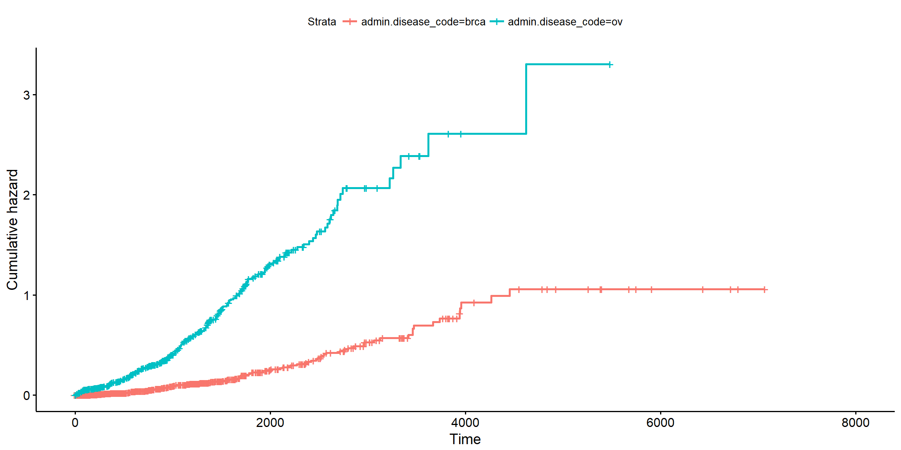

survminer: wykresy analizy przeżycia
pełne informacji i elegancji
Marcin Kosinski
29 Września, 2017
Why R? 2017
O mnie
O mnie

Analiza przeżycia
Analiza przeżycia
Analiza przeżycia to zbiór metod statystycznych badających procesy, w których interesujący jest czas, jaki upłynie do (niekoniecznie pierwszego) wystąpienia pewnego zdarzenia.
Przykłady zdarzeń:
- śmierć pacjenta / nawrót choroby,
- awaria urządzenia,
- dezaktywacja usługi (np. telekomunikacyjnej),
- odejście pracownika z firmy,
- wypadek na drodze,
Typowe narzędzia analizy przeżycia obejmują:
- estymację funkcji przeżycia (np. estymator Kaplana-Meiera)
- estymację funkcji skumulowanego hazardu (np. Nelsona–Aalena)
- modele regresyjne (np. model proporcjonalnego hazardu Coxa)
Postać danych
 Źródło: what-when-how, In Depth Tutorials and Information - SURVIVAL ANALYSIS REGRESSION (Social Science)
Źródło: what-when-how, In Depth Tutorials and Information - SURVIVAL ANALYSIS REGRESSION (Social Science)
Jak potraktować takie dane ?
 Źródło: what-when-how, In Depth Tutorials and Information - SURVIVAL ANALYSIS REGRESSION (Social Science)
Źródło: what-when-how, In Depth Tutorials and Information - SURVIVAL ANALYSIS REGRESSION (Social Science)
RTCGA
Na jakich danych popracujemy?library(RTCGA.clinical)
BRCAOV.survInfo <- survivalTCGA(
BRCA.clinical, OV.clinical,
extract.cols = "admin.disease_code"
)
head(BRCAOV.survInfo) times bcr_patient_barcode patient.vital_status admin.disease_code
1 3767 TCGA-3C-AAAU 0 brca
2 3801 TCGA-3C-AALI 0 brca
3 1228 TCGA-3C-AALJ 0 brca
4 1217 TCGA-3C-AALK 0 brca
5 158 TCGA-4H-AAAK 0 brca
6 1477 TCGA-5L-AAT0 0 brcaRTCGA

BioC 2016 Conference Overview and Few Ways of Downloading TCGA Data
Krzywe przeżycia
Krzywe przeżycia - konstrukcja
Przykład: estymator Kaplana-MeieraFunkcja przeżycia: \(S(t) = P(T > t)\), T - zmienna losowa oznaczająca czas zdarzenia
\(\hat{S}(t)\) - oszacowanie krzywej/funkji przeżycia w chwili \(t\)
\[\hat{S}(t) = \prod_{t_i < t} \frac{n_i - d_i}{n_i}\]
- \(t_i\) - czas \(i\)-tego zdarzenia
- \(n_i\) - liczba obserwacji w zbiorze ryzyka w chwili \(t_i\)
- \(d_i\) - liczba zdarzeń (np. awarii) w chwili \(t_i\)
Zakładamy, że \(t_i\) są uporządkowane niemalejąco.
Krzywe przeżycia - tabela


Źródło: Wikipedia
Krzywe przeżycia - wykresy
Podstawowe wykresy - pakiet base
library(survival)
fit <- survfit(
Surv(times, patient.vital_status) ~ admin.disease_code,
data = BRCAOV.survInfo
)
plot(fit) # baseKrzywe przeżycia
Sprowadzenie do przydatnej formy wymaga nakładu pracy.plot(fit, col = c("orange","purple"),
lty = c(1:2), lwd = 3,
conf.int = TRUE, xmax = 2000)
# add a legend
legend(100, .3, c("Ovarian Cancer", "Breast Cancer"),
lty = c(1:2), col = c("orange","purple"))
survminer
survminer
Autor: Alboukadel Kassambara, Pobrań: 47 tysięcy, na CRAN od 18-01-2016
survminer
> Gdzie można dowiedzieć się jak pracować z pakietem?Wpisy na R-Bloggers:
- M. Kosiński. R-ADDICT January 2017. Comparing (Fancy) Survival Curves with Weighted Log-rank Tests
- M. Kosiński. R-ADDICT January 2017. When You Went too Far with Survival Plots
- A. Kassambara. STHDA December 2016. Survival Analysis Basics: Curves and Logrank Tests
- A. Kassambara. STHDA December 2016. Cox Proportional Hazards Model
- A. Kassambara. STHDA December 2016. Cox Model Assumptions
- M. Kosiński. R-ADDICT November 2016. Determine optimal cutpoints for numerical variables in survival plots
- M. Kosiński. R-ADDICT May 2016. Survival plots have never been so informative
- A. Kassambara. STHDA January 2016. survminer R package: Survival Data Analysis and Visualization.
Contributed RStudio Cheatsheets - The survminer package
(by Przemyslaw Biecek. Updated 03/17.)
www.stdha.com/english/rpkgs/survminer
survminer
Podstawowe wywołanie.
library(survminer)
ggsurvplot(fit)survminer
Tabela zbioru ryzyka.
ggsurvplot(fit, risk.table = TRUE)survminer
ggsurvplot(fit, risk.table = TRUE, pval = TRUE)survminer
Ważone testy log-rank (dla dwóch grup)
ggsurvplot(fit, risk.table = TRUE, pval = TRUE,
pval.method = TRUE,
log.rank.weights = "n")survminer
Intensywność cenzurowań
ggsurvplot(fit, ncensor.plot = TRUE)survminer
Co jeszcze potrafi? - kod
ggsurvplot(
fit, # survfit object with calculated statistics.
risk.table = TRUE, # show risk table.
pval = TRUE, # show p-value of log-rank test.
conf.int = TRUE, # show confidence intervals for
# point estimaes of survival curves.
xlim = c(0,2000), # present narrower X axis, but not affect
# survival estimates.
break.time.by = 500, # break X axis in time intervals by 500.
ggtheme = theme_RTCGA(), # customize plot and risk table with a theme.
risk.table.y.text.col = T, # colour risk table text annotations.
risk.table.y.text = FALSE # show bars instead of names in text annotations
# in legend of risk table
) -> psurvminer
Co jeszcze potrafi? - wykres
survminer
Gdy zależy nam na porządnym wykresie - kod
ggsurv <- ggsurvplot(
fit, # survfit object with calculated statistics.
data = BRCAOV.survInfo, # data used to fit survival curves.
risk.table = TRUE, # show risk table.
pval = TRUE, # show p-value of log-rank test.
conf.int = TRUE, # show confidence intervals
xlim = c(0,2000), # present narrower X axis, but not affect
# survival estimates.
xlab = "Time in days", # customize X axis label.
break.time.by = 500, # break X axis in time intervals by 500.
ggtheme = theme_light(), # customize plot and risk table with a theme.
risk.table.y.text.col = T,# colour risk table text annotations.
risk.table.height = 0.25, # the height of the risk table
risk.table.y.text = FALSE,# show bars instead of names in text annotations
# in legend of risk table.
ncensor.plot = TRUE, # plot the number of censored subjects at time t
ncensor.plot.height = 0.25,
conf.int.style = "step", # customize style of confidence intervals
surv.median.line = "hv", # add the median survival pointer.
legend.labs = c("BRCA", "OV")) # change legend labels.survminer
survminer
I mamy dużo czasu - kodggsurv$plot <- ggsurv$plot + labs(
title = "Survival curves",
subtitle = "Based on Kaplan-Meier estimates",
caption = "created with survminer")
ggsurv$table <- ggsurv$table + labs(
title = "Note the risk set sizes",
subtitle = "and remember about censoring.",
caption = "source code: website.com")
ggsurv$ncensor.plot <- ggsurv$ncensor.plot + labs(
title = "Number of censorings",
subtitle = "over the time.",
caption = "source code: website.com" )
ggsurv <- ggpar(
ggsurv,
font.title = c(16, "bold", "darkblue"),
font.subtitle = c(15, "bold.italic", "purple"),
font.caption = c(14, "plain", "orange"),
font.x = c(14, "bold.italic", "red"),
font.y = c(14, "bold.italic", "darkred"),
font.tickslab = c(12, "plain", "darkgreen"),
legend = "top")survminer
survminer
- ‘log’: log transformation of the survivor function,
- ‘event’: plots cumulative events \((f(y) = 1-y)\). It’s also known as the cumulative incidence,
- ‘cumhaz’ plots the cumulative hazard function \((f(y) = -log(y))\)
ggsurvplot(fit, fun = "cumhaz")
survminer - wiele zmiennych
fit2 <- survfit(Surv(time, status) ~ sex + rx + adhere,
data = colon )
ggsurv <- ggsurvplot(fit2, fun = "event", conf.int = TRUE,
ggtheme = theme_bw())
ggsurv$plot + theme_bw() +
theme(legend.position = "right")+
facet_grid(rx ~ adhere)Dodatkowe funkcjonalności
Dane
load('BRCA_HNSC.surv_rnaseq.rda')
# Head and Neck Cancer / Breast Carcinoma
head(BRCA_HNSC.surv_rnaseq) times bcr_patient_barcode patient.vital_status cohort ABCD4
1 3767 TCGA-3C-AAAU 0 BRCA.rnaseq 322.2560
2 3801 TCGA-3C-AALI 0 BRCA.rnaseq 486.6775
3 1228 TCGA-3C-AALJ 0 BRCA.rnaseq 308.2502
4 1217 TCGA-3C-AALK 0 BRCA.rnaseq 589.1601
5 158 TCGA-4H-AAAK 0 BRCA.rnaseq 615.7447
6 1477 TCGA-5L-AAT0 0 BRCA.rnaseq 896.3191surv_cutpoint
Determine optimal cutpoints for numerical variables in survival plotsKategoryzacja (podział na grupy) zmiennej ciągłej w oparciu o maxstat(maximally selected rank statistics). Winietka pakietu maxstat, rozdział 2.
BRCA_HNSC.surv_rnaseq.cut <- surv_cutpoint(
BRCA_HNSC.surv_rnaseq,
time = "times",
event = "patient.vital_status",
variables = c("ABCD4", "cohort")
)
summary(BRCA_HNSC.surv_rnaseq.cut) cutpoint statistic
ABCD4 468.6417 1.944138Dlaczego nie kategoryzować zmiennych ciągłych - Harrel, 2015
surv_cutpoint - wykres
plot(BRCA_HNSC.surv_rnaseq.cut, "ABCD4", palette = "npg")$ABCD4surv_categorize
RTCGA::kmTCGA(
surv_categorize(BRCA_HNSC.surv_rnaseq.cut), # kategoryzacja
explanatory.names = c("ABCD4", "cohort"),
pval = TRUE, conf.int = TRUE,
xlim = c(0,3000), break.time.by = 500)Model Coxa
Stworzenie modelu
head(lung) inst time status age sex ph.ecog ph.karno pat.karno meal.cal wt.loss
1 3 306 2 74 1 1 90 100 1175 NA
2 3 455 2 68 1 0 90 90 1225 15
3 3 1010 1 56 1 0 90 90 NA 15
4 5 210 2 57 1 1 90 60 1150 11
5 1 883 2 60 1 0 100 90 NA 0
6 12 1022 1 74 1 1 50 80 513 0res.cox <- coxph(
Surv(time, status) ~ age + sex + wt.loss,
data = lung
)
res.coxCall:
coxph(formula = Surv(time, status) ~ age + sex + wt.loss, data = lung)
coef exp(coef) se(coef) z p
age 0.02009 1.02029 0.00966 2.08 0.0377
sex -0.52103 0.59391 0.17435 -2.99 0.0028
wt.loss 0.00076 1.00076 0.00619 0.12 0.9024
Likelihood ratio test=14.7 on 3 df, p=0.00212
n= 214, number of events= 152
(14 observations deleted due to missingness)Sprawdzenie założeń
ggcoxzph(cox.zph(res.cox))Sprawdzenie formy funkcyjnej zmiennych ciągłych
ggcoxfunctional(
Surv(time, status) ~ age + log(age) + sqrt(age),
data = lung)Diagnostyka dopasowania
ggcoxdiagnostics(
res.cox, type = "deviance",
linear.predictions = FALSE, ggtheme = theme_bw()
)Bazowa funkcja hazardu
ggsurvplot(
survfit(res.cox), color = "#2E9FDF",
ggtheme = theme_minimal()
)Forest Plot
ggforest(res.cox)